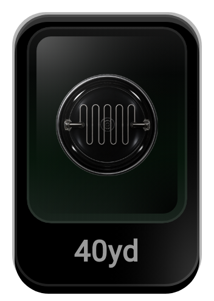

تحويل سprint مُقاس
ابدأ بمسافة ووقت. للحصول على سياق إضافي، أضف نوع البدء، طريقة القياس، السطح، الأحذية، الرياح، أو الارتفاع.
محول وقت السباق
هل سجّلت زمنك في العدو لمسافة 30 مترًا أو 60 مترًا أو مسافة أخرى؟ أدخل المسافة والزمن لمعرفة الزمن المتوقع لمسافة 100 متر. أضف تفاصيل عن الانطلاق وطريقة التوقيت وسطح الجري للحصول على تقدير أنسب.
لا يحتاج إلى حاسوب محمول. ابدأ بمسافة ووقت.

استخدم تقدير 100 متر لوضع سprints أقصر على مقياس مشترك وراقب كيف تغير أداءك مع الوقت.
ابدأ بمسافة ووقت. للحصول على سياق إضافي، أضف نوع البدء، طريقة القياس، السطح، الأحذية، الرياح، أو الارتفاع.
ابحث عن سرعتك المتوسطة بالميل في الساعة أو كم/ساعة، ثم أضف السياق عبر درجة السرعة، مقارنات مُعَدَّلة بالعمر، ونتائج قابلة للمشاركة.
استقطِر الرياضيين، شكل فريقك في السباقات، تطوير السمات، ابحث عن أداء أفضل، ارتفع في القوائم، وجمع الجوائز أثناء الطريق.
أضف المسافة والوقت الذي سجلته. استخدم وضعية بسيطة للتقدير السريع.
في الوضع التفصيلي، أخبر التطبيق كيف بدأت وكيف تم تفعيل العداد. البدء الجوي يمنحك تسلقًا، بينما البدء الثابت يحتوي على تسارع من الراحة.
استخدم التقييم لمقارنة السباقات عبر مسافات مختلفة وتسجيل تقدمك.

مثال: قطع 60 مترًا في 7.50 ثانية يعطي زمنًا تقديريًا قدره 11.64 ثانية لمسافة 100 متر.
افتح وضع «Track Meet» في التطبيق، واختر «Male»، ثم أدخل 60 مترًا و7.50 ثانية. حدّد الانطلاق من مكعّبات البدء، والتوقيت الإلكتروني، وأحذية المضمار ذات المسامير، ومضمارًا مطاطيًا جافًا، وعدم وجود رياح. اترك خانتي العمر والارتفاع فارغتين.
زمن 11.64 ثانية تقديري. للحصول على زمن رسمي لمسافة 100 متر يجب خوض سباق 100 متر مع تسجيل الزمن.


طريقة واحدة لاستخدامه
يبلغ متوسط سرعة العدو لمسافة 40 ياردة في 4.50 ثانية نحو 18.2 ميلًا في الساعة (29.3 كم/ساعة) على كامل المسافة. استخدم وضع 40 ياردة في التطبيق لتقدير زمن 100 متر مع مراعاة طريقة التوقيت وظروف الجري.


شارك سرعتك
احفظ نتيجة العدو على شكل ملصق شفاف وأضفه إلى صورتك أو مقطع الفيديو الخاص بك. ثم شاركه في قصة على Instagram أو انشره على TikTok. ويمكنك أيضًا حفظ النتيجة في مقطع فيديو مستقل.

سباق الفريق
ابدأ فريق رياضي بالمهارات المكملة. اضبط الأداء، تحسين التبديلات، وتعامل مع الظروف السباقية، وتأكد من أن أربعك قادرة على الأداء عند الحاجة.
أنت مستعد عندما تكون
أجلب المسافة والزمن من سباقك القادم.